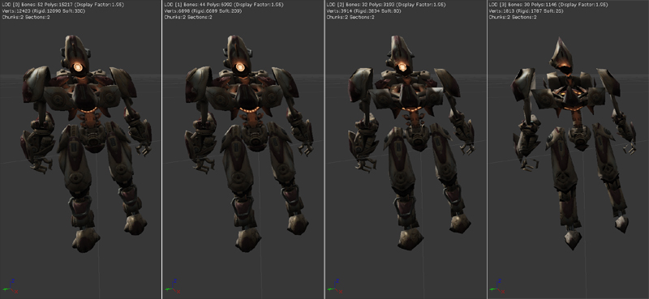

UDN
Search public documentation:
ImportingSkeletalLODsCH
English Translation
日本語訳
한국어
Interested in the Unreal Engine?
Visit the Unreal Technology site.
Looking for jobs and company info?
Check out the Epic games site.
Questions about support via UDN?
Contact the UDN Staff
日本語訳
한국어
Interested in the Unreal Engine?
Visit the Unreal Technology site.
Looking for jobs and company info?
Check out the Epic games site.
Questions about support via UDN?
Contact the UDN Staff
导入骨架网格物体LODs
概述
因为更新骨架网格物体的所有骨骼和顶点的性能消耗是非常昂贵的，所以虚幻引擎3可以根据视角到骨架网格物体的距离渲染骨架网格物体的不同LOD(细节层次)版本。这样当在一个场景中渲染很多角色时，这是一个非常重要的优化。 虚幻引擎2以前自动生成骨架网格物体的低多边形版本，但是由于所生成的版本效果比美术工作人员制作的LODs的效果差很多便删除了这个功能。 虚幻引擎3即支持骨架网格物体的网格物体LOD也支持骨骼LOD。没有用于自动生成低LOD网格物体的工具；所以这个过程必须由美工人员在工作流程中使用的内容创建包中完成。然后通过使用动画集编辑器将美工人员创建网格物体导入到现有的骨架网格物体中。在那里，您可以控制在游戏中的哪个距离处使用那个LOD。当渲染一个较低LOD版本的网格物体时，动画系统将仅使得需要的骨骼产生动画并进行更新。
较低LOD网格物体需求
当您导入一个网格物体的较低LOD版本时，如果您想让一个网格物体作为另一个网格物体的LOD，那么需要遵守一些规则：
- 当删除骨骼时，它们仅能从层次的末端开始删除。所以比如移除LOD网格物体中的手指是一个好主意，而不是从脊骨上移除骨骼。
- 基础网格物体和LOD的根骨骼必须一样。
- 基础网格物体和LOD的层次必须一样。
查看LODs
在AnimSetViewer(动画集查看器)的工具条上有几个按钮，它允许您查看不同LOD层次的网格物体外观：

- Auto(自动) - 基于屏幕上网格物体的大小，自动选择要使用的LOD层次。这允许您预览网格物体在游戏中显示效果。
- B - 强制使用‘基础’网格物体(也就是LOD0)进行显示。
- 1 - 强制显示LOD1网格物体。
- 2 - 强制显示LOD2网格物体。
- 3 - 强制显示LOD3网格物体。

导入LOD
首先在动画集查看打开您想为其增加LOD的骨架网格物体。然后在‘文件’菜单下选择‘导入网格物体LOD’。将会要求您指定包含那个网格物体的较低细节层次版本的PSK文件。一旦您选中了您想导入的.PSK文件，将会弹出一个组合框，从而允许那您选择把这个网格物体导入为那个LOD层次。LOD 0是‘基础’网格物体或者最高多边形网格物体。LOD1是第一个较低版本的LOD，以此类推。将其导入已经存在的LOD时，它将会代替现有的LOD网格物体。 如果您成功地导入了网格物体并且没有产生任何错误，您可以点击工具条上适当的`Force LOD(强制LOD)'按钮来查看网格物体是否可以正确地显示。
配置LOD
为了使您的LOD正常地工作，您需要对某些设置做一些调整。在‘网格物体’标签下面，每个LOD层次都是LODInfo数组中的一项。
 您可以忽略数组中的元素0，因为它是‘基础’网格物体项。
您可以忽略数组中的元素0，因为它是‘基础’网格物体项。
- DisplayFactor(显示因素) - 这项控制着当使用那个LOD之前网格物体在屏幕上的大小。较小的数值意味着当网格物体较远时使用这个LOD。您可以在3D预览窗口上部查看预览网格物体的当前的DisplayFactor 。对于每个连续的LOD层次，一个LOD的DisplayFactor值会比上一个LOD层次小。
- *LODHysteresis(LOD滞后作用) * - 为了避免当网格物体恰好在两个LOD层次的边界上时出现在两个LOD层次间的闪烁现象，这个参数允许您在从简单版本到复杂版本变换时引入一定的‘偏移’。
- LODMaterialMap(LOD材质映射) - 网格物体的LOD版本必须和基础网格物体使用同样的材质。然而，当您导入网格物体时，材质可能是以不同的顺序导入的。这个数组允许您选择骨架网格物体的材质数组中的元素和LOD网格物体每个部分的映射关系。
材质和LODs
设置LOD的最简单的方式是使它和基础网格物体使用相同的材质。因为每个SkeletalMeshComponent(骨架网格物体实例)有它自己的材质数组，允许您覆盖在SkeletalMesh Materials(骨架网格物体材质)数组中的值，您最好在任何LOD中使用那个数组中所使用的所有材质。单个实例覆盖的例子是应用不同的团队皮肤或面部。然而，如果您真的想创建一个具有基础网格物体没有使用的材质的LOD，也是可以实现的。在SkeletalMesh(骨架网格物体)的材质数组中添加一个新的元素，这个元素将不会被基础网格物体使用，并在该元素中存入新的材质。然后使用那个LOD的LODMaterialMap指向这个新的数组元素。
LOD、插槽及物理资源
您仅可以为在所有LODs中都出现的骨骼创建插槽。当您创建一个新的插槽时，仅在所有LODs中的骨骼出现在骨骼选项组合框中。如果您尝试并导入一个新的LOD且它丢失了一个插槽所需要的骨骼，那么将会出现错误。 PhysicsAsset(物理资源)所需要的骨骼将会总是保持更新，即使某些骨骼不被LOD网格物体所需要。这是因为它们用于基于每个骨骼的碰撞检测，而当某人离您较远时碰撞检测是不应该改变的。